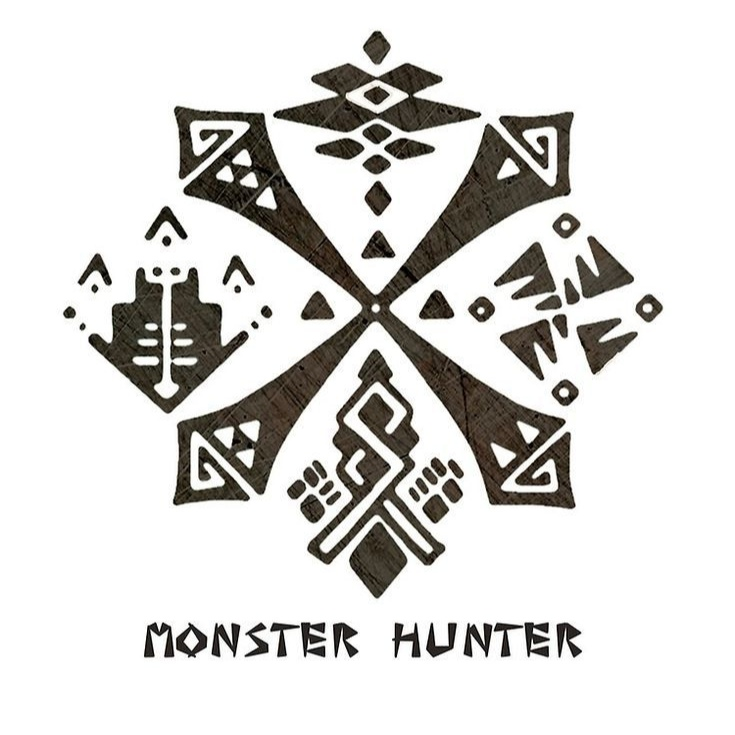
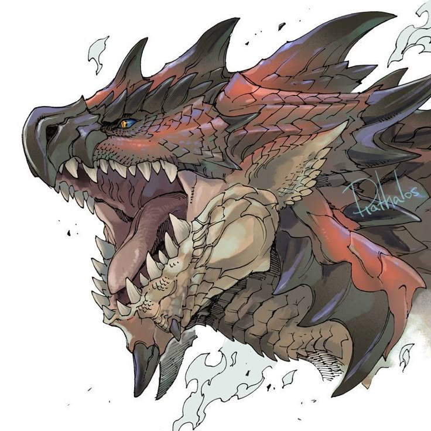

 |
MONSTER HUNTER |
 |
|||||
|
Monster Hunter, adalah game action rpg multiplayer co-op.
Yang dimana player di haruskan melawan berbagai monster untuk mendapatkan material dari tubuh monster.
|
|
Tanggal Rilis Monster Hunter-1 11 Maret 2004 Di PS 2 |
|||||
| Home | |||||||
| Monster | Hunter | ||||||